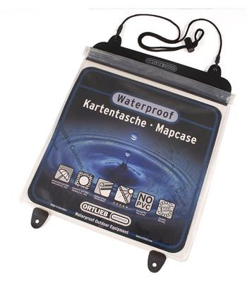

Ortlieb Map Case
I have never had a map case before. In fact I always thought of them as a bit naff. However, after more than thirty years of stopping to get the map out of the top pocket of my rucksack and then struggling to fold it in the wind, I finally decided that it was time I bought a map case.
I did some research on the various cases available and came to the conclusion, that although it was expensive, the Ortlieb case was probably the best option. I bought mine from Facewest.
Ortlieb Map Case
{kind=link}
When I unpacked the case I noticed how soft and flexible the material felt. Several of the reviews I had read said how the case could easily be rolled up, or even used as a seat, without creasing it. The roll top closure system is very easy to use and has kept my maps dry. Now that I have a map case, I wonder why I didn't buy one years ago. It's not only useful for storing maps, but any other bits of paper that you might want to refer to when walking, like bearings and distances. I have also used it several times on cycle rides. On the bike if you sling it over your shoulder it does tend to flap about a bit and get in the way. However, it will attach to an Ortlieb bar bag. Oh no! Another bit of kit to get.